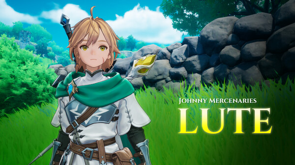
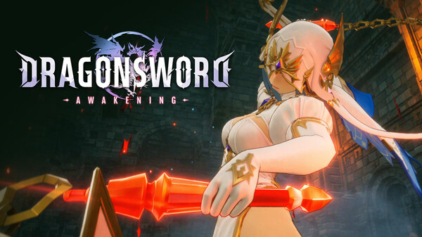
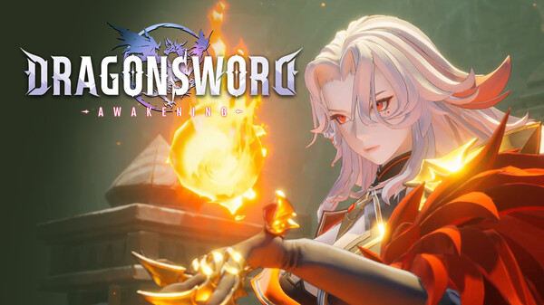

Roster overview
Nineteen heroes, one three-slot chain
The Steam release contains 19 playable heroes, all obtainable through gameplay. The practical question is not “Who is S-tier?” but “Which three heroes create a reliable Signal chain for this activity?”
Why some profiles are brief: several characters are officially named or featured in trailers, but their complete English skill data and recruitment steps are still being verified. The site shows that limitation instead of guessing.
Directory
Launch character records

Lute
The young protagonist traveling toward Orbis and the youngest member of Johnny Mercenaries. An official gameplay preview confirms his playable status.
Castella
An eccentric Elf and early companion. Official story text identifies her directly, while an official combo preview frames her as an assault vanguard in the Lute–Castella–Aria sequence.
Aria
A mercenary-band firepower specialist shown using bombs to build Fire and Airborne states before handing the sequence back to Castella.
Dana
The youngest member of the Red Fox Mercenary Crew and a gifted alchemist. She uses a magitech gun and is associated with the ice golem Chako.

Theresia
Featured in an official Steam character trailer and named in launch DLC. Use the in-game record for current skills and Status Ailment details.

Kalien
Featured in an official Steam character trailer. Full English combat and recruitment details are intentionally left to the current in-game profile.
Johnny
The mercenary whose chaotic life sweeps Lute into the main journey. Official Steam story text confirms his narrative role.
Ornette
Named in official launch material and the costume DLC list. Detailed role and build information remains under verification.
Charlotte
Officially named before launch. This directory does not assign an element, weapon or unlock route without a stable primary-source record.
Reina
Named in official material. Full gameplay fields remain intentionally unlisted until they can be checked against the release build.
Astria
Named in official material. No unsupported ability, rank or recruitment claim is attached to this record.
Recruitment
How hero unlocking works
Hound13's launch announcement states that all 19 characters can be obtained through quests. Heroes are either granted directly or assembled with Nameless Souls. You will not start with the full roster.
- Advance the main story to open new recruitment paths.
- Read quest rewards before leaving a region or activity.
- Keep Nameless Souls for the hero you actually plan to field.
- Do not buy a costume expecting it to unlock the related hero.
Team logic
Choose by handoff, not by hype
Question 01
What state does the opener create?
Check the current in-game Status Ailment description rather than relying on an old demo table.
Question 02
Who answers that state?
Your second hero needs a compatible Signal Skill, not merely a high individual damage rating.
Question 03
Can the third slot repair the chain?
Use the final slot for extension, area coverage or a safer reset when the ideal setup fails.
Question 04
Does it fit the activity?
Groups, mobile targets and large bosses reward different control and positioning tools.
Source confidence
What the labels mean
| Label | What is verified | What may remain unknown |
|---|---|---|
| Official profile | Identity plus meaningful story or gameplay details from official material. | Exact release-build numbers can still change. |
| Officially featured | The hero appears in a first-party Steam trailer or launch asset. | Complete English skills or unlock steps. |
| Name confirmed | The English name appears in official launch material. | Weapon, role, ailment and recruitment details. |